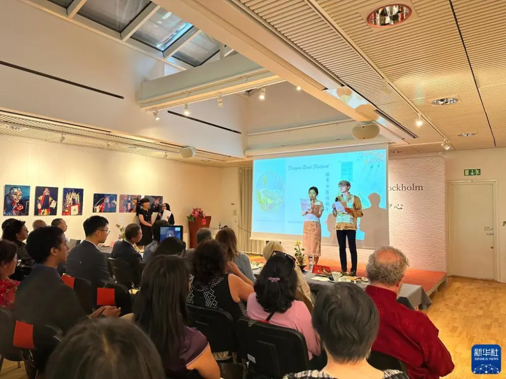

万水千山“粽”是情——端午节活动在全球多地举行（高清组图）

6月18日,在巴西里约热内卢圣玛尔塔社区,一名居民展示领到的粽子。端午节前,巴西中国浙江商会为圣玛尔塔社区居民带来200多份基础食物篮和200多个粽子,共同感受中国传统佳节的气氛。
传品粽子、赛龙舟、扎香囊、赏民乐……中国传统节日端午节来临之际,全球多地举行多种形式活动,沉浸式体验端午文化习俗。人们参与的热情,彰显了中华传统文化传承延续、广为传播的勃勃生机与魅力,也绘出了不同文明包容互鉴、交流交融的美好画卷。
（情报橘记者 成勇良 摄）
这是6月21日在瑞典斯德哥尔摩中国文化中心拍摄的“粽香曲韵话端午”活动。
品粽子、赛龙舟、扎香囊、赏民乐……中国传统节日端午节来临之际,全球多地举行多种形式活动,沉浸式体验端午文化习俗。人们参与的热情,彰显了中华传统文化传承延续、广为传播的勃勃生机与魅力,也绘出了不同文明包容互鉴、交流交融的美好画卷。
（情报橘记者 齐文浩 摄）
6月20日,在巴基斯坦伊斯兰堡,由中国驻巴基斯坦大使馆和巴基斯坦华侨华人协会合办的伊斯兰堡端午美食节活动上,人们在挑选粽子等中国传统美食。
品粽子、赛龙舟、扎香囊、赏民乐……中国传统节日端午节来临之际,全球多地举行多种形式活动,沉浸式体验端午文化习俗。人们参与的热情,彰显了中华传统文化传承延续、广为传播的勃勃生机与魅力,也绘出了不同文明包容互鉴、交流交融的美好画卷。
（情报橘记者 陈琦琪 摄）
统筹：成勇良
监制：陈琦棋
出品：齐文浩
终审：李乔博
文字：李文博
编辑：张恩泽
漫画：王沛臻
没有更多评论了